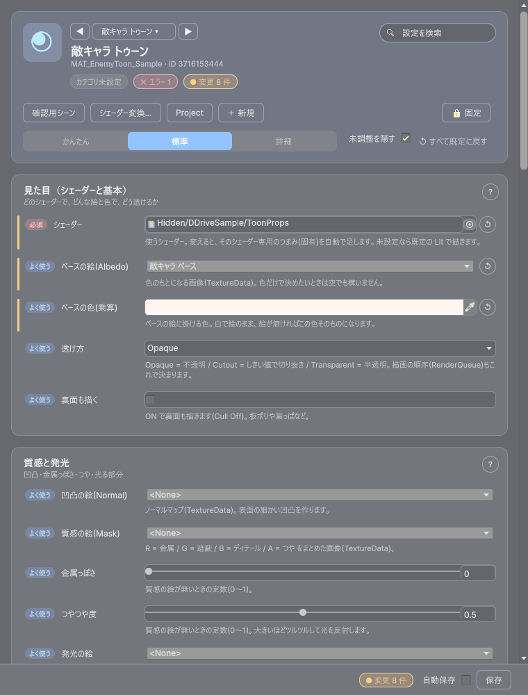
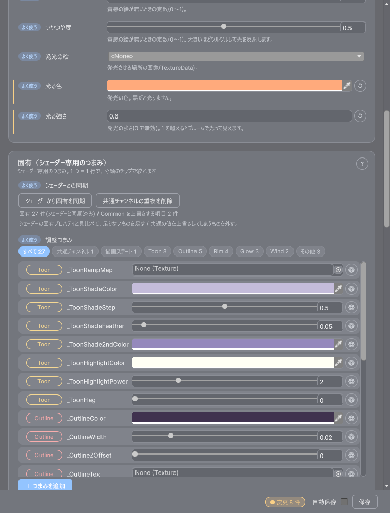
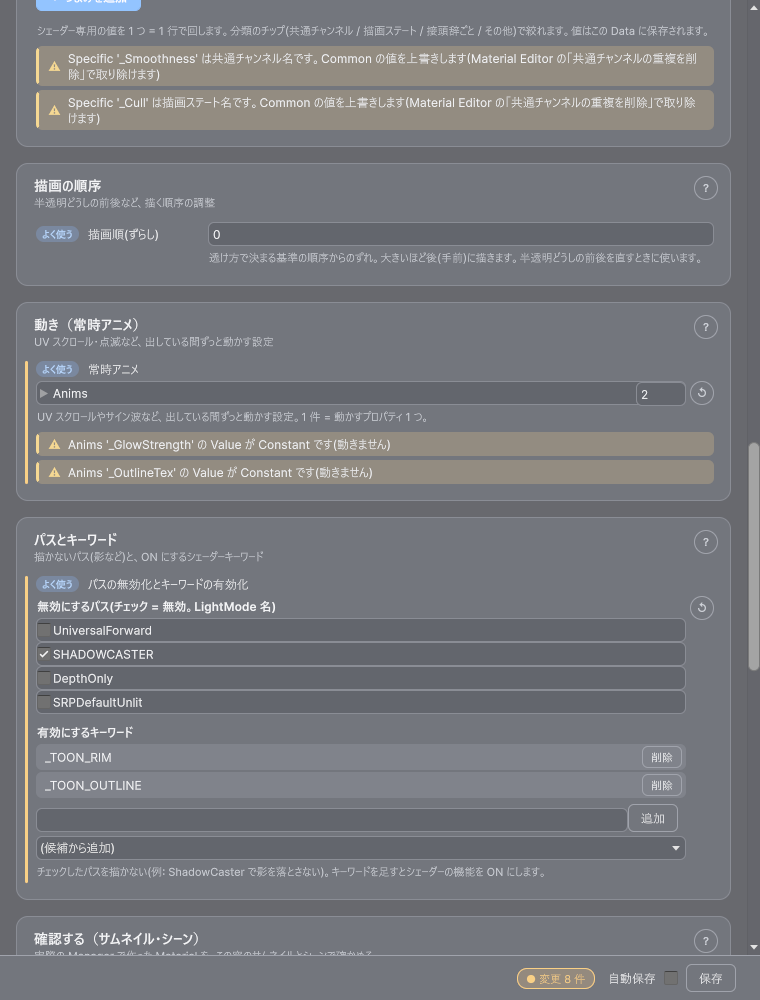
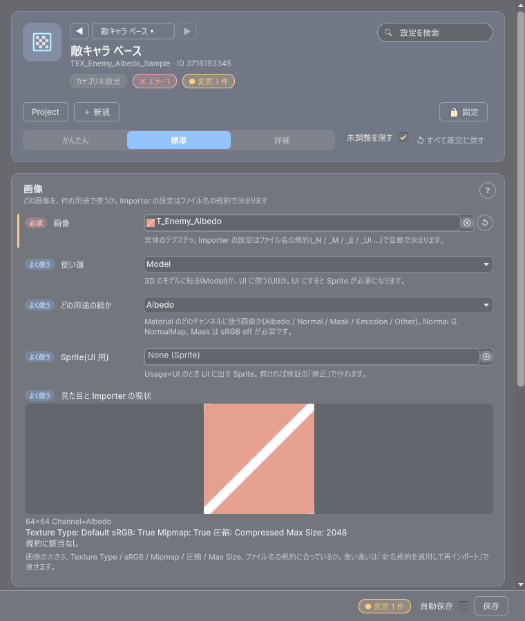

最終更新日: 2026-10-13
Material Editor は、マテリアルデータをサムネイルで見ながら編集するウィンドウです。Texture Editor はテクスチャデータ用の小さなウィンドウです。どちらも他のエディター（VFX・Audio・Canvas など）と同じ見た目と操作で、Light / Dark の両方に対応しています。
対象のデータを選んでいない（空の）ときは、ウィンドウの「サンプルを作る」ボタンでサンプルのデータを作って試せます（Assets/GameData/<種別>/Sample/ にカテゴリ Sample で作られます。同じものが既にあれば、作らずそれを選びます）。
Tools > D-Drive > Editors > Material / Texture / Material 変換 / Material プレビュー。Project で対象を選んでから開くと、そのまま編集できますCreate > D-Drive > Material > Material Data（または Asset Browser の「新規」で種別 Material）で作るDDrive/Lit を入れる。カード「固有」に _OcclusionStrength などが既定値で自動追加され、「固有: 追加 1 …」と出ます
| 要素 | 説明 |
|---|---|
| ◀ [名前 ▾] ▶ | 同じ種類のデータの切り替え（検索つき、最近開いた 5 件）。未保存の変更があると保存するか聞かれます |
| 「確認用シーン」 | 確認用シーンを開いて、選んだ形に Material を貼って置きます。右クリックで「このシーンに配置」 |
| 「シェーダー変換…」 | Material 変換ウィンドウを開きます（下の節） |
| Project / ＋ 新規 / 固定 | Project で場所を表示 / 新しいマテリアルデータを作る / Project の選択に追従しない |
| かんたん / 標準 / 詳細 | 出す欄の切り替え。かんたん = シェーダーだけ、標準 = よく使う欄まで、詳細 = すべて。「未調整を隠す」を ON にすると、まだ触っていない欄が折りたたまれます |
| 設定を検索 | ラベル・説明・検索語に一致する欄だけ出します。固有のつまみの名前（例: Toon / 影）にも一致します |
| 下部バー | 変更の件数・自動保存・保存（Ctrl+S でも保存）。Material には再生が無いので、▶ や速度は出ません |
シェーダー・ベースの絵と色・透け方・裏面。各項目の意味は マテリアル / テクスチャの設定項目。「必須」のシェーダーを変えると、その固有のつまみが自動で並びます。
凹凸（Normal）・質感（Mask）・金属っぽさ・つやつや度・発光の絵 / 色 / 強さ。画像は TextureData を選びます。

| 要素 | 説明 |
|---|---|
| 「シェーダーから固有を同期」 | シェーダーの固有プロパティ（共通チャンネル名の規約に該当しないもの）を既定値で追加します。既存の値は保持。シェーダーを変えたときは自動で行います |
| 「共通チャンネルの重複を削除」 | 固有に紛れ込んだ共通チャンネル名 / 描画ステート名を取り除きます（そのままだと Common の値を上書きします）。紛れ込みがあるときだけ出ます。1 手で Ctrl+Z できます |
| 状態の文 | 「固有 27 件(シェーダーと同期済み)」「未登録の固有 N 件: …」「Common を上書きする項目 N 件」 |
| 分類のチップ | 「すべて 27 / 共通チャンネル 1 / 描画ステート 1 / Toon 8 / Outline 5 …」。共通チャンネル・描画ステートは Common を上書きしてしまう名前（要注意）。接頭辞ごと（_ToonRamp → Toon など。2 件以上あるものだけ）と「その他」。つまみの左のチップを押すと、その 1 つの分類を付け替えられます（この Unity を開いている間だけ） |
| つまみの行 | 分類 / プロパティ名 / 値 / ↺ / ⚙。色・数値（シェーダーの Range ならその範囲）・整数・ベクトル・テクスチャ。左端の色バーと ↺ は「このウィンドウで開いたときの値」との違いです。名前が黄色の行は、シェーダーに無い名前（反映されません） |
| ⚙ | 定義の詳細（Property 名・Value の型など）と「このつまみを削除」 |
| 「＋ つまみを追加」 | 色 / 数値 / テクスチャ / ベクトルから選ぶと、シェーダーに実在して、まだ登録していない固有プロパティだけが候補に出ます。「自由入力」は名前を自分で入れる空の行 |
20 行を超えるときは一覧が内側のスクロールになります。チップで絞って 20 行以下にすると、そのまま並びます。固有の値の下に、その固有への警告（例: 共通チャンネル名です）が出ます。
RenderQueue のずらし（半透明どうしの前後を直す）。ライトレイヤーは未使用です（詳細モードでだけ出ます。ライトレイヤーは Model 側で指定）。
UV スクロールやサイン波。使い方は マテリアル / テクスチャの設定項目の「Anims の使い方」。サムネイルと SceneView では再生ボタンを押さなくても動きます。
ShadowCaster = 影を落とさない）。シェーダーに無い名前を指定済みのときは「(シェーダーに無い)」と出て、外せます
| 項目 | 説明 |
|---|---|
| サムネイル | 実際の Manager が作った Material を球などに貼った絵。ドラッグで回転（横 = Y 軸、縦 = 傾き。傾きは ±80°）。「X 反転 / Y 反転」で回す向きを逆にできます（ポップアップ・変換ウィンドウと共通）。「ポップアップ」でサムネイルだけの独立ウィンドウに出します |
| 形状 | Sphere / Plane（板）/ Cube / Model（任意のモデルデータ。サムネイルには出ず、シーン配置で確認）。Model のときだけ「プレビュー用モデル」が出ます |
| ターンテーブル / ライト回転 | サムネイルと置いたプレビューを回す / ライトの向き（0〜360。シーンの最初の Directional Light も一緒に回り、「撤去」で元に戻る） |
| 比較対象 | もう 1 つのマテリアルデータ。サムネイルが「左右」（2 分割）か「切替」（1 枚を「A → B」で切り替え）になります。「並べて比較」でシーンの隣に並べます |
| 確認用シーン / 今のシーンに配置 | 選んだ形を置いて SceneView で確認します（保存されません。Hierarchy に [D-Drive] Material Preview (UX) が出ます） |
| 再生成 / 撤去 | 共有 Material を作り直す（普段は自動）/ 置いたものを消す |
表示名・カテゴリ・説明・タグ・アイコン・担当者・仕様書 URL・変更メモ・動作の取り決め・イベント、そして Maya から作ったときの取り込み元（詳細モード）。

Inspector の「シェーダー変換」、Material Editor の「シェーダー変換…」、または Tools > D-Drive > Editors > Material 変換 で開きます。共通チャンネル（Albedo / Normal / Mask / Emission / Blend）はそのまま維持し、固有パラメータだけを付け替えます。
| 要素 | 説明 |
|---|---|
| 変換元 MaterialData / 変換先 Shader | 乗り換えたいデータと、乗り換え先のシェーダー。変換先を選ぶと下に結果が出ます |
| 「変換テーブルを再読み込み」 | プロジェクト内の Shader Conversion Table（固有の対応表）を集め直します。テーブルを作った・直した後に押します |
| 「見た目の比較(A = 変換前 / B = 変換後)」 | A と B の 2 枚のサムネイル。B はアセットを作る前のメモリ上の変換結果です。「左右」/「切替」、「A → B」、形状、「回転」、「ライト」、「X 反転」/「Y 反転」は Material Editor と同じ |
| サマリ行と互換表 | 「共通データ(…)はそのまま維持。固有: 対応 N / 維持 N / 破棄 N …」と、名前 / 型 / 値 / 互換 / 備考の表 |
| 「新規 MaterialData として作成」 | 変換元は変えずに、同じカテゴリへ変換後のデータを新しく作ります。元を残して試したいときはこちら |
| 「この Data を変換(Undo 可)」 | 変換元の Shader と Specific を書き換えます。Ctrl+Z で戻せます |
| 節 | 印 |
|---|---|
| 共通チャンネル（そのまま引き継ぐ） | 〇 = 変換先に受け口がある / × = 受け口が無く無視される（例: Unlit に Normal や Mask は無い）/ － = 元で未設定 |
| 固有パラメータ（Specific） | → = テーブルで対応先に写す / = = 同名・同型で維持 / × = 破棄 |
| 変換先で新しく追加される固有 | 変換元に無く、シェーダーの既定値で登録されるもの |
Create > D-Drive > Material > Shader Conversion Table でテーブルを作り、Rules に From / To と Mappings（FromProperty → ToProperty。Float / Int は Scale と Offset で値の変換も可。ToProperty を空にすると「意図的に破棄」）を書きます。
サムネイルだけを独立したウィンドウに出したものです。Inspector の「プレビューをポップアップ」、Material Editor の「ポップアップ」、または Tools > D-Drive > Editors > Material プレビュー で開きます。対象・🔒・形状（Model は選べません）・「回転」・「ライト」・「X 反転 / Y 反転」があり、画像はドラッグで回転します。Material Editor を閉じても単独で動き、Inspector での編集や Undo に追従します。
| やりたいこと | 操作 |
|---|---|
| 2 つのマテリアルを見比べる | カード「確認する」の「比較対象」に別のマテリアルデータ → サムネイルが「左右」で 2 分割。実照明で見たいときは「並べて比較」でシーンに 2 体並べる |
| モデルに貼った状態で見る | 形状を Model、「プレビュー用モデル」にモデルデータ →「確認用シーン」。サムネイルには出ません |
| Toon の影の段数だけ触りたい | カード「固有」の分類チップ「Toon」を押し、つまみを回す。または上の検索に「shade」 |
| 影を落とさないようにする | カード「パスとキーワード」で ShadowCaster にチェック |
| Lit から Unlit に乗り換える | 「シェーダー変換…」→ 変換先に DDrive/Unlit → 互換表と見た目の比較で確認 → 「新規 MaterialData として作成」か「この Data を変換(Undo 可)」 |
| Maya から来たデータの Shader が None | Shader に DDrive/AiStandardSurface か DDrive/Lit を設定（固有は自動同期） |
| テクスチャの読み込み設定が規約とずれている | Texture Editor で開き、「命名規約を適用して再インポート」を押す |